策略视频-口语技能S7-教程
测试 DEMO
S7 测试 3D 版-链接 分秒针：
https://app.mediatrack.cn/reviews/2042572305741123584/2042566436651536384?inviteid=DaY1kdWqo
一、视觉标准
1、人物标准
（维持 2D 设计中的人物特点）
- 人物头身比例
- 脸型
- 眼睛颜色
- 头发样式
- 3D 质感（3D 哑光塑料）
| Female Character Multi View | Male Character Multi View |
|---|---|
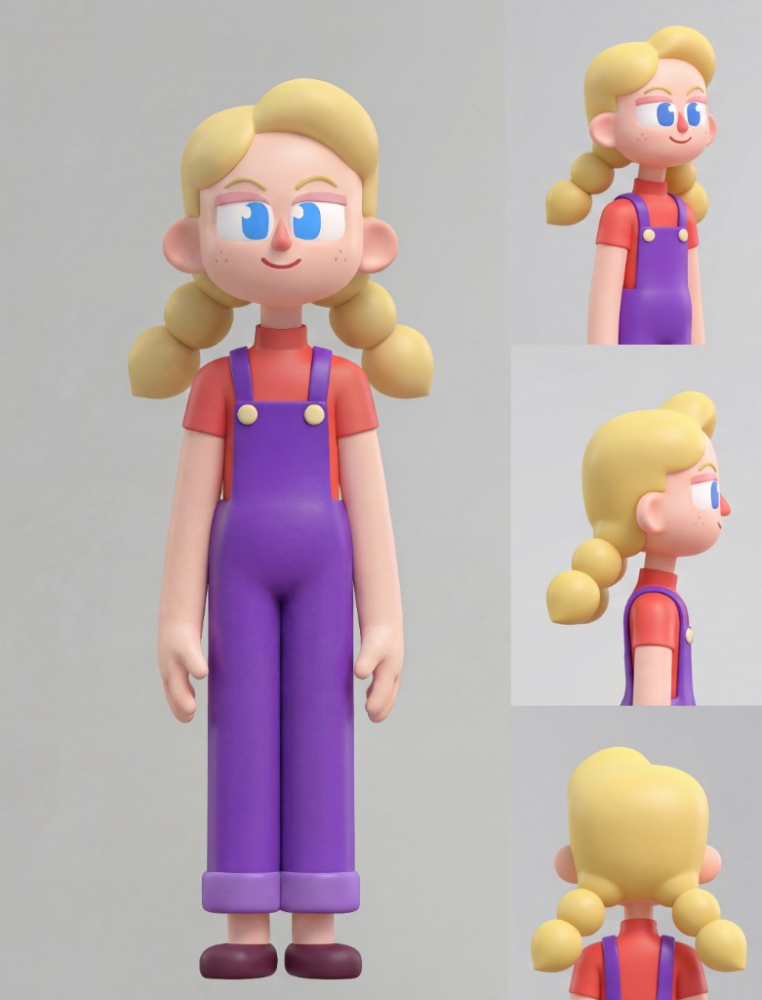 |
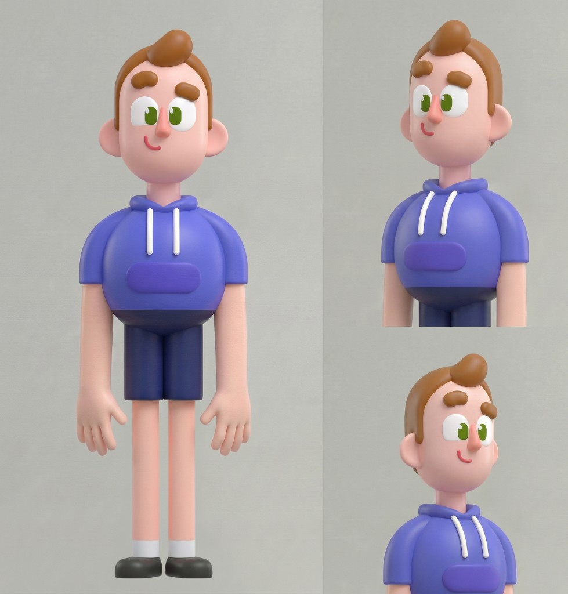 |
2、场景标准
3D 风格动画参考视频：gheehappy
https://www.youtube.com/watch?v=SGVMrLKghFo
场景图案较简单，不能过于复杂，严格分为 2-3 个层级。
案例 1 白天室内场景
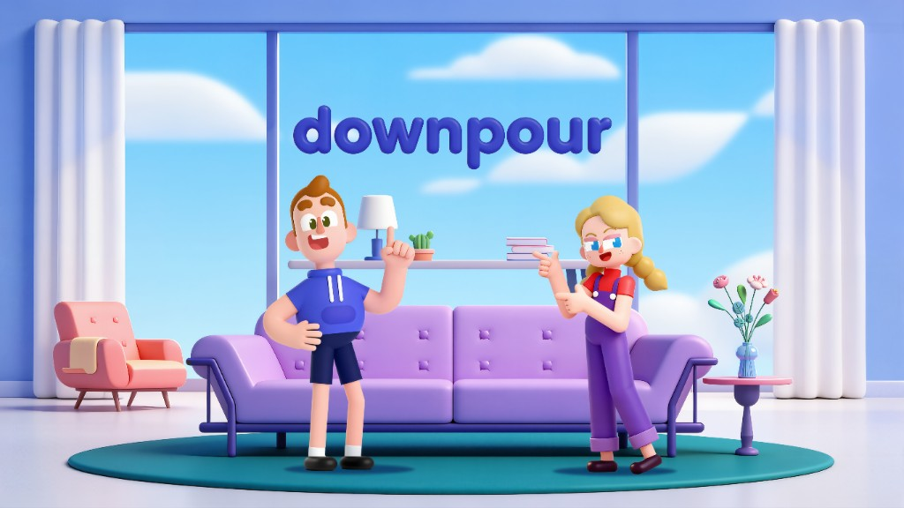
案例 2 画室场景
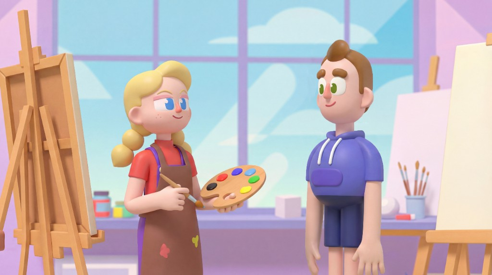
- 中景道具和人物色彩更鲜明，更加立体
- 远景背景稍微扁平，微微虚化模糊
案例 3 丛林场景
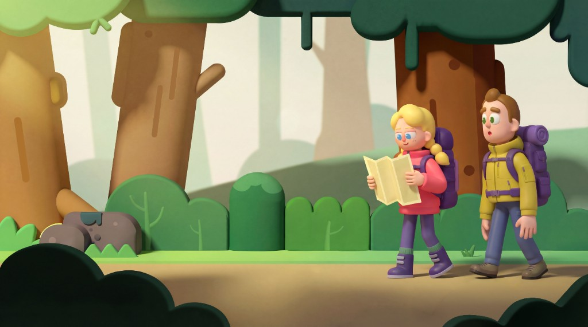
- 中景树木和人物色彩更鲜明，更加立体，场景质感参考 gheehappy 中 3D 但微扁平的立体感
- 远景背景稍微平面质感，饱和度低、对比度低，微微虚化模糊
- 前景遮挡立体但颜色加深
案例 4 夜晚室内场景
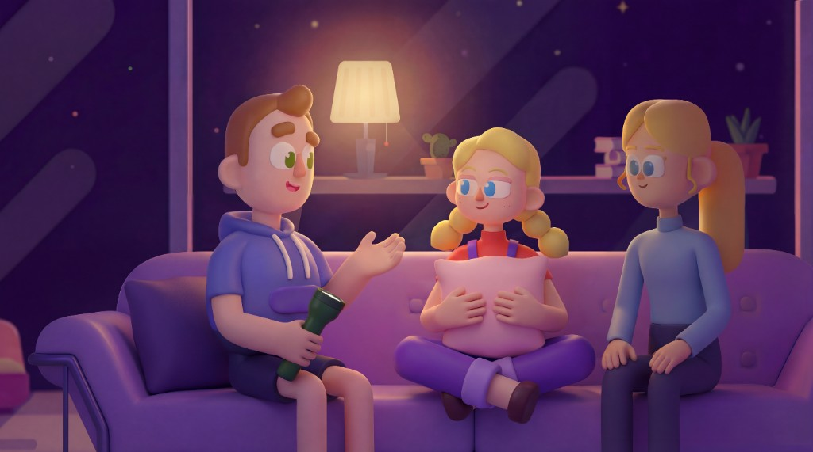
案例 5 奇幻森林场景
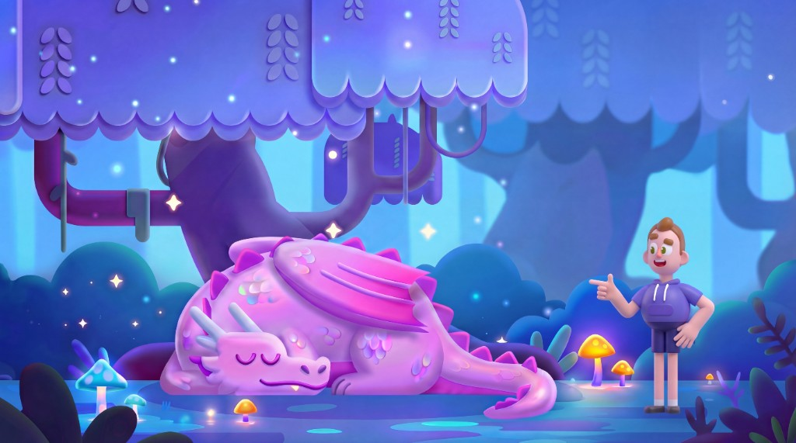
3、转场标准
依旧参考 gheehappy，不采用剪映中模版，用下一场景中会出现的图案转场。
https://www.youtube.com/watch?v=SGVMrLKghFo
4、视频内字体标准
字体安装包 + 字体层级标准：
https://shimo.zhenguanyu.com/docs/k9zy4jPvnG0Mc8Ye?autoRedirect=1
二、制作流程
1、人设制作
工具运用： 调用 Nano Banana（Lib TV 上调用 Lib Nano Pro）
任务： 根据已有 2D 人设资产转 3D
Lib Nano Pro 人设生成示例
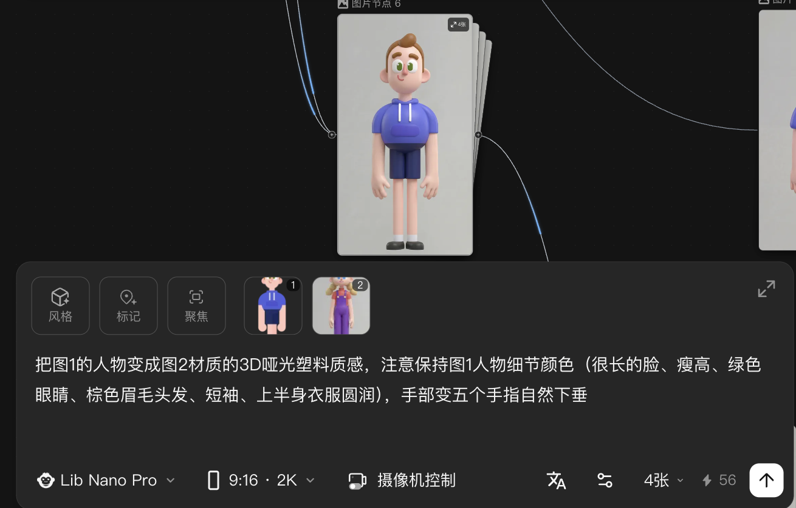
Prompt：
把图 1 的人物变成图 2 材质的 3D 哑光塑料质感，注意保持图 1 人物细节颜色（很长的脸、瘦高、绿色眼睛、棕色眉毛头发），手部变五个手指自然下垂
后续步骤：
- 对出来的 3D 形象进行 PS 精修
- 本步需严格审查，会影响后面全部步骤
- 继续生成正侧面、侧面、背面
P.S. 斑马纵横角色素材库（需申请权限）：
https://x.zhenguanyu.com/react/#/material/picture-lib?id=1121472&sort=name
人物材质参考
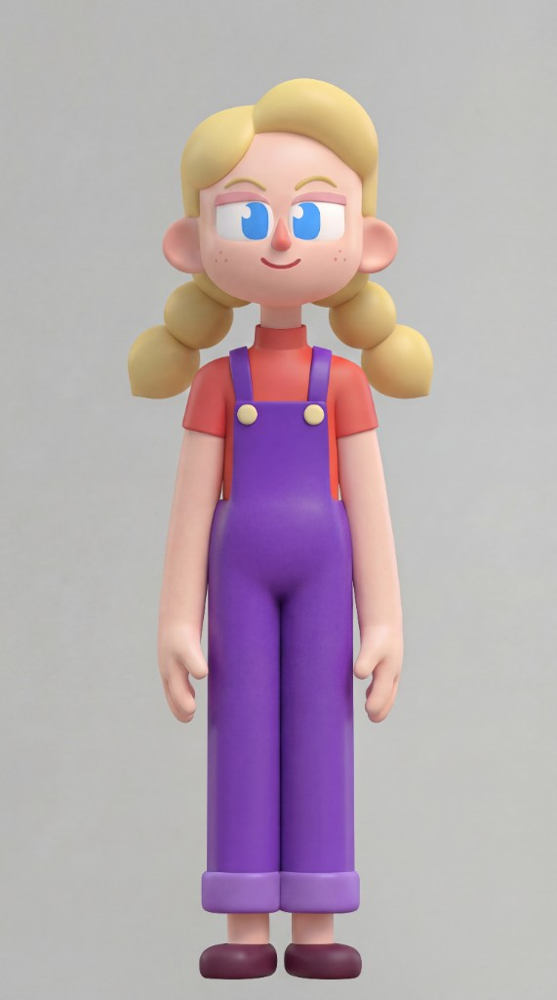
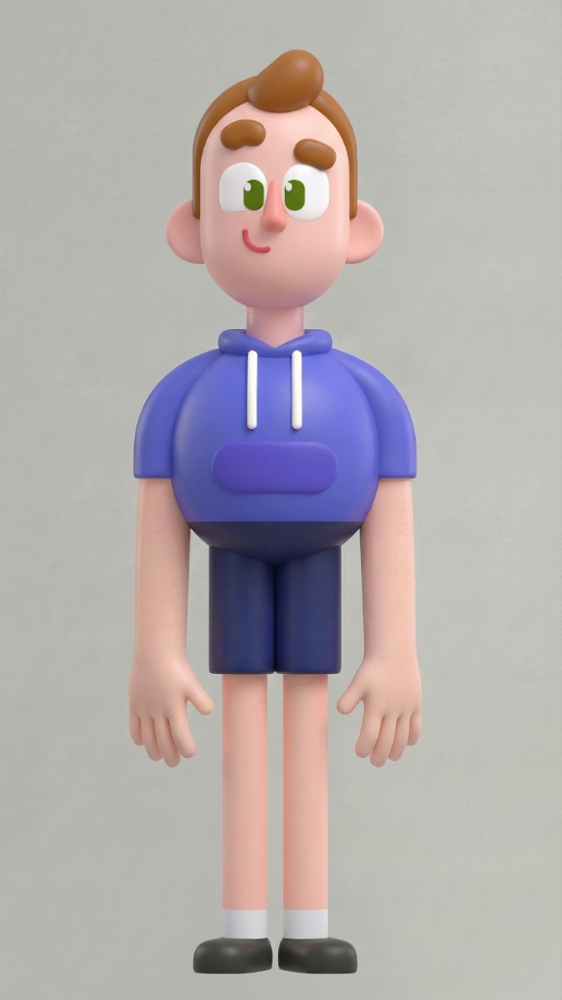
2、场景制作
步骤 1
通过参考 + 文字描述直接生成平面 AI / AE 风格场景。
（这一步运用 banana，建议瑕疵阶段在此步骤用 PS 改好再进入下一步。主要考虑场景部分瑕疵，如透视问题、一些过于杂乱的物件、重复的物件、不好看的物件，都可以 PS 处理。）
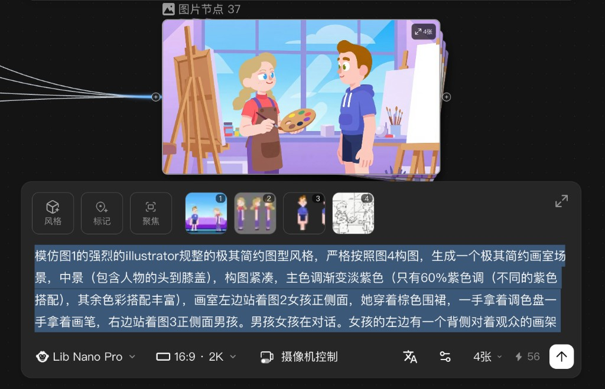
此步骤 Prompt 参考：
模仿图 1 的强烈的 illustrator 规整的极其简约图型风格，严格按照图 4 构图，生成一个极其简约画室场景，中景（包含人物的头到膝盖），构图紧凑，主色调渐变淡紫色（只有 60% 紫色调（不同的紫色搭配），其余色彩搭配丰富），画室左边站着图 2 女孩正侧面，她穿着棕色围裙，一手拿着调色盘一手拿着画笔，右边站着图 3 正侧面男孩。男孩女孩在对话。女孩的左边有一个背侧对着观众的画架（有只能看到后面木版的画版）的局部，男孩右边有一个正侧对着观众的画架（有上面空白的画板）。背景是一扇巨大的窗户（窗外蓝色渐变有少量白云，窗玻璃有反光）和窗台。窗台上有一些画具和石膏模型颜料等。画面只分 2 层级的景深，中景颜色清晰鲜明，后景模糊且颜色扁平饱和度低。
垫图思路：
风格图 + 人设图 + 分镜草稿（分镜草稿可省略，但如果省略时构图效果不好可以绘制参考）
步骤 2
用 banana 进行场景 3D 质感转换。
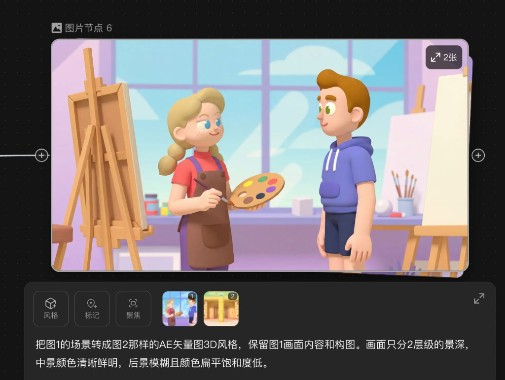
此步骤 Prompt 参考：
把图 1 的场景转成图 2 那样的 AE 矢量图 3D 风格，保留图 1 画面内容和构图。画面只分 2 层级的景深，中景颜色清晰鲜明，后景模糊且颜色扁平饱和度低。
垫图思路：
步骤 1 生成结果 + 3D 风格参考图（从 gheehappy 截取，https://www.youtube.com/watch?v=SGVMrLKghFo）
步骤 3
对变形的人物进行遮挡再合成
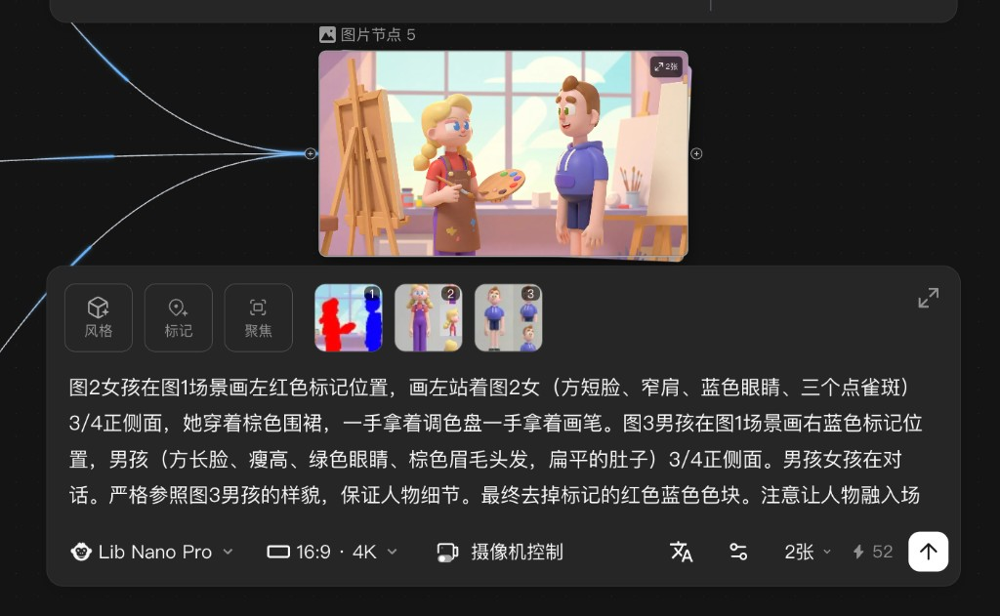
PS 进行色块遮盖
场景人物合成 Prompt 参考：
图 2 女孩在图 1 场景画左红色标记位置，画左站着图 2 女（方短脸、窄肩、蓝色眼睛、三个点雀斑）3/4 正侧面，她穿着棕色围裙，一手拿着调色盘一手拿着画笔。图 3 男孩在图 1 场景画右蓝色标记位置，男孩（方长脸、瘦高、绿色眼睛、棕色眉毛头发，扁平的肚子）3/4 正侧面。男孩女孩在对话。严格参照图 3 男孩的样貌，保证人物细节。最终去掉标记的红色蓝色色块。注意让人物融入场景。
垫图思路：
步骤 2 生成的图进行颜色遮挡 + 人设图
补充说明：
- 生成后人物会跑型，需要 PS 精调
- 前中后景层级可能需要手动 PS 区分
3、语音制作
登陆 minimax：
https://www.minimax.io/audio/text-to-speech
按步骤 1-5 执行，其中第 2 步看第二张图。
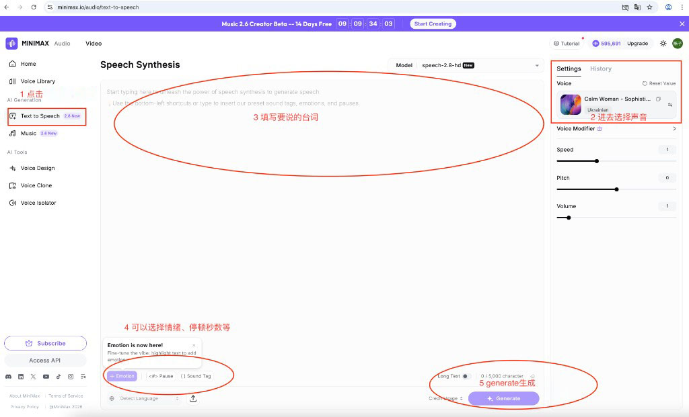
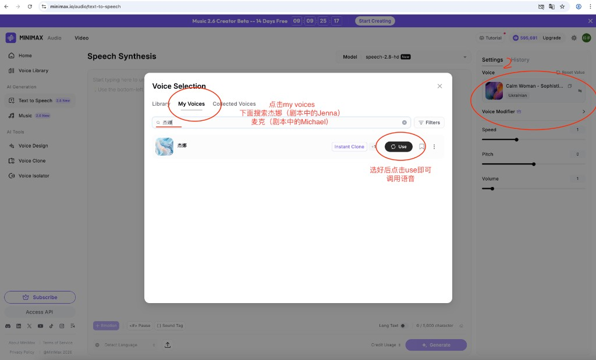
- 最左边点击
text to speech - 右上选择语音
- 中间把台词粘贴过来
- 可以选择情绪、停顿秒数等
- 生成
4、视频驱动
原则：
同场景尽可能一次性驱动 3 个分镜，需要根据语音安排利用好 15s 的时间。
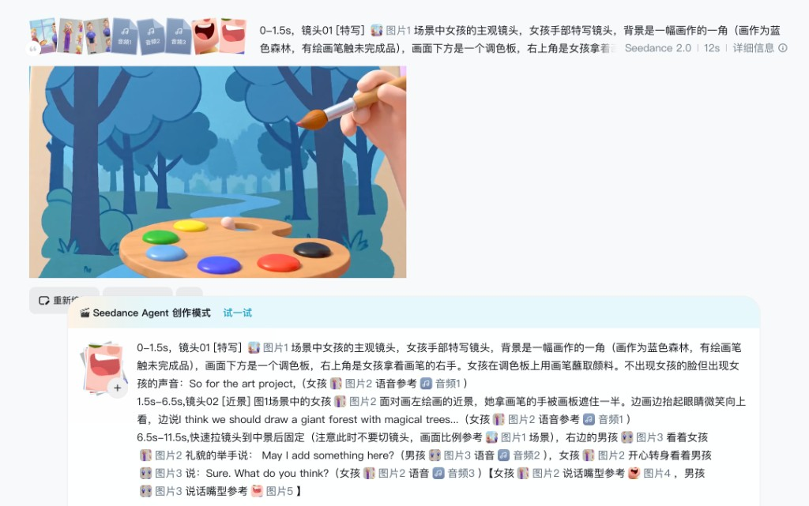
基本格式：
基本格式： 秒数+镜头号【景别】运镜+画面描述和台词语音
0-1.5s， 镜头 01【特写】 图 1 场景中女孩的主观镜头，女孩手部特写镜头，背景是一幅画作的一角（画作为蓝色森林，有绘画笔触未完成品），画面下方是一个调色板，右上角是女孩拿着画笔的右手。女孩在调色板上用画笔蘸取颜料。不出现女孩的脸但出现女孩的声音： So for the art project,（女孩参考图 2，语音参考语音 1）
1.5s-6.5s， 镜头 02【近景】 图 1 场景中的女孩图片 2 面对画左绘画的近景，她拿画笔的手被画板遮住一半。边画边抬起眼睛微笑向上看，边说 I think we should draw a giant forest with magical trees...（女孩图片 2，语音参考语音 1）
6.5s-11.5s， 镜头 03【中景】 快速拉镜头到中景后固定（注意此时不要切镜头，画面比例参考图 1 场景），右边的男孩图 3 看着女孩图 2 礼貌地举手说： May I add something here?（男孩图 3 语音音频 2）， 女孩图 2 开心转身看着男孩图 3 说： Sure. What do you think?（女孩图 2 语音音频 1）【女孩图 2 说话嘴型参考图 4，男孩图 3 说话嘴型参考图 5】
画面描述技巧
不仅仅描述“有什么”，还描述“在做什么”以及“怎么做”。
- 位置描述：画面下方、右上角
- 动作细节：“用画笔蘸取颜料”、“边画边抬起眼睛微笑向上看”
- 情绪与神态：“礼貌地举手”、“开心转身”
- 逻辑约束：“不出现女孩的脸但出现女孩的声音”
5、剪辑合成
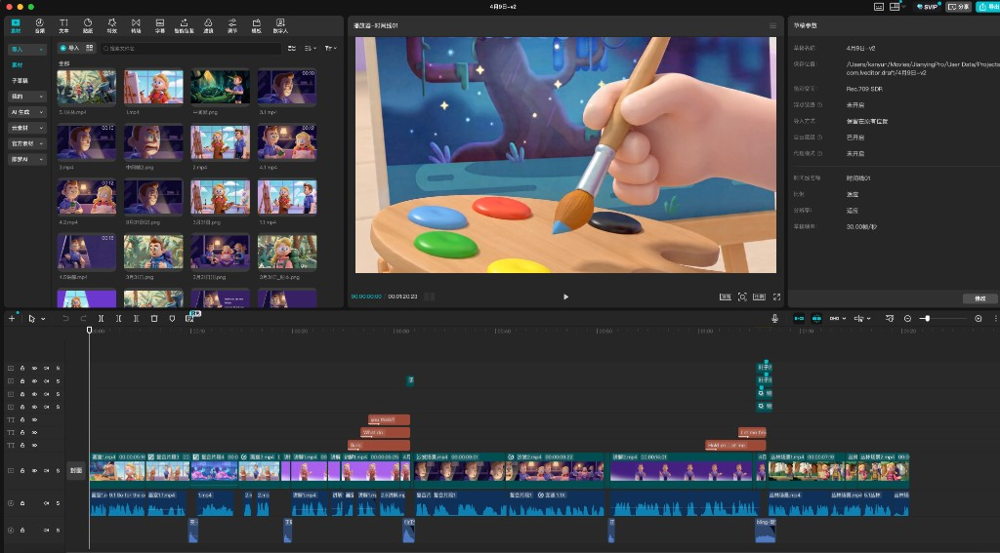
- 运用剪映挑选合适素材进行剪辑拼接
- 筛选掉不合适的素材（如糊帧、花帧、消失、多余）
- 同场景可以利用不同的抽卡结果搭配拼接
- 语音也可以在即梦生成和 minimax 生成的语音中进行拼接挑选
- 优先选择语音语调优美、节奏合适、情绪合理的语音
- 最终再增添合适音效、转场素材、讲解文字